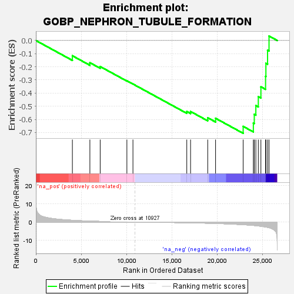
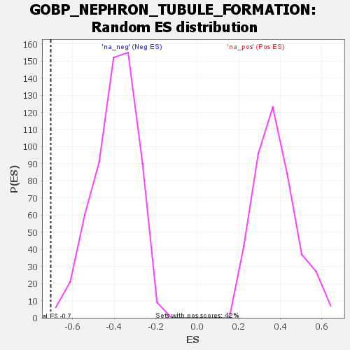

| | | Dataset | wbh_treatment_res_for_gsea |
| Phenotype | NoPhenotypeAvailable |
| Upregulated in class | na_neg |
| GeneSet | GOBP_NEPHRON_TUBULE_FORMATION |
| Enrichment Score (ES) | -0.705845 |
| Normalized Enrichment Score (NES) | -1.7817028 |
| Nominal p-value | 0.0017123288 |
| FDR q-value | 0.12678233 |
| FWER p-Value | 0.836 |
Table: GSEA Results Summary

Fig 1: Enrichment plot: GOBP_NEPHRON_TUBULE_FORMATION
Profile of the Running ES Score & Positions of GeneSet Members on the Rank Ordered List
| SYMBOL | RANK IN GENE LIST | RANK METRIC SCORE | RUNNING ES | CORE ENRICHMENT | | 1 | SOX8 | 4024 | 0.969 | -0.1160 | No |
| 2 | CTNNB1 | 5953 | 0.542 | -0.1687 | No |
| 3 | NOG | 7088 | 0.364 | -0.1980 | No |
| 4 | SIX1 | 10031 | 0.064 | -0.3064 | No |
| 5 | HNF1B | 10698 | 0.016 | -0.3309 | No |
| 6 | WNT6 | 16631 | -0.389 | -0.5398 | No |
| 7 | HS2ST1 | 17047 | -0.426 | -0.5399 | No |
| 8 | PAX8 | 18937 | -0.645 | -0.5873 | No |
| 9 | OSR1 | 19802 | -0.774 | -0.5915 | No |
| 10 | GREM1 | 22842 | -1.442 | -0.6531 | Yes |
| 11 | HES5 | 23965 | -1.858 | -0.6273 | Yes |
| 12 | WNT9B | 24068 | -1.906 | -0.5615 | Yes |
| 13 | GATA3 | 24240 | -1.997 | -0.4948 | Yes |
| 14 | IRX3 | 24512 | -2.149 | -0.4264 | Yes |
| 15 | PAX2 | 24798 | -2.320 | -0.3523 | Yes |
| 16 | IRX2 | 25311 | -2.711 | -0.2724 | Yes |
| 17 | SIX4 | 25348 | -2.742 | -0.1734 | Yes |
| 18 | IRX1 | 25532 | -2.914 | -0.0737 | Yes |
| 19 | GDNF | 25693 | -3.109 | 0.0340 | Yes |
Table: GSEA details [plain text format]

Fig 2: GOBP_NEPHRON_TUBULE_FORMATION: Random ES distribution
Gene set null distribution of ES for GOBP_NEPHRON_TUBULE_FORMATION